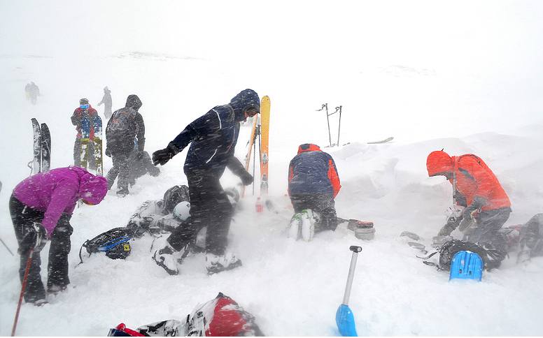
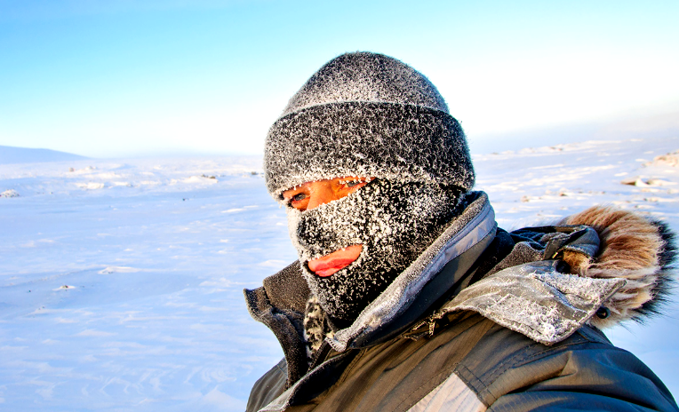
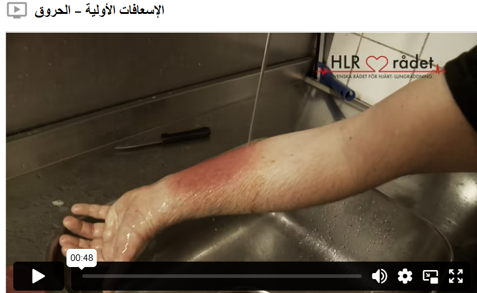

قضمة الصقيع والحروق
التبريد
البرودة، الماء، الثلج والجليد يمكن أن تسبب انخفاض حرارة الجسم، وتزداد الخطورة بشكل كبير إذا كان الشخص مبللًا أو إذا كانت هناك رياح في الخارج. يمكن أن يصبح الشخص المصاب بانخفاض حرارة الجسم شاحبًا، مرتبكًا وخاملًا، أو حتى فاقدًا للوعي. وفي أسوأ الحالات، قد يؤدي هذا الوضع إلى توقف القلب.
لمساعدة شخص يعاني من انخفاض حرارة الجسم، يجب خلع الملابس المبللة ولف الشخص ببطانيات أو ملابس جافة، ووضع قبعة على رأسه. إذا توفرت مشروبات دافئة، يمكن أن تساعد في تدفئة المصاب من الداخل. حاول عند الحاجة نقل الشخص إلى مكان أكثر دفئًا وبعيدًا عن الرياح.
قضمة الصقيع
الأطراف التي تقع في أقصى الجسم، مثل اليدين والقدمين، هي الأكثر عرضة للإصابة بتلف البرودة. لأن الجسم يعطي أولوية لتدفق الدم والدفء إلى الأجزاء المركزية. عند الإصابة بتلف البرودة، تفقد القدرة على الحركة وبعدها أيضًا الإحساس تدريجيًا. علامات تلف البرودة هي ظهور بقع بيضاء على الجلد، بالإضافة إلى تحول الجلد إلى لون أزرق أحيانًا ويصبح صلبًا أحيانًا أخرى.
قم بتدفئة الأجزاء المصابة من الجسم باستخدام حرارة جسمك. إذا رأيت بقعًا بيضاء على خد شخص ما في الطقس البارد، يمكنك وضع راحة يدك على خده لتدفئته، وإذا كانت أصابعك باردة جدًا، يمكنك وضع يديك تحت الإبطين لتدفئتها. قدم مشروبًا دافئًا لشخص مصاب بتلف البرودة ويكون في حالة وعي كامل. اطلب الرعاية الطبية أو اتصل بالرقم 1177 للحصول على نصائح حول كيفية التصرف.
الحروق
تحدث الحروق الحادة عندما تتعرض فجأة للحرق من مصدر مثل النار أو الماء الساخن. يجب أولاً شطف الحروق الناتجة عن النار أو سطح ساخن بالماء البارد لبضع دقائق، ثم بالماء الفاتر لمدة لا تقل عن 10 دقائق. أما الحروق الناتجة عن الماء الساخن فيجب تبريدها بالماء الفاتر في أسرع وقت ممكن، لمدة لا تقل عن 10 دقائق، لتجنب تغلغل الضرر عميقًا في الجسم. حافظ على بثور الحرق سليمة وإذا أمكن، اخلع الملابس من المنطقة المصابة، وإذا لم يكن ذلك ممكنًا، برّد المنطقة المصابة مباشرةً. بعد التبريد، غطّ المنطقة بضماد فضفاض. يجب طلب الرعاية الطبية للحروق الكبيرة والاتصال بالرقم 112 إذا واجه المصاب صعوبة في التنفس.
